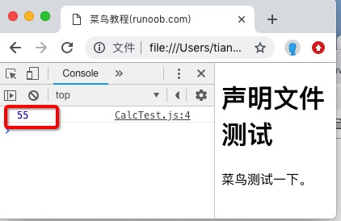

TypeScript 宣言ファイル
宣言ファイルは TypeScript と JavaScript ライブラリの間の翻訳者です。これは TypeScript に、JavaScript ライブラリがどのような機能を公開しているか、パラメータの型、戻り値の型を伝えます。
まず、ある問題から始めましょう
あなたが TypeScript でプロジェクトを書いていて、サードパーティの JavaScript ライブラリ（例えば jQuery）を導入する必要があるとします。次のようなコードを書くかもしれません：
$('#foo');
// 或
jQuery('#foo');
このコードは純粋な JavaScript プロジェクトでは全く問題ありませんが、TypeScript ファイルでは直接エラーになります：
jQuery('#foo');
// index.ts(1,1): error TS2304: Cannot find name 'jQuery'.
なぜエラーになるのでしょうか？TypeScript が認識しないからです$とjQueryそれが何であるかを。
TypeScript の核心機能は型チェックです。コンパイル段階で各変数・各関数の型を知る必要があります。しかし jQuery は純粋な JavaScript ライブラリであり、型情報が一切ないため、TypeScript はそれを理解できません。
クイックフィックス：declare キーワード
最も簡単な方法は、declareキーワードを使って TypeScript に手動で伝えることです：「この変数は存在し、その型はこうだ」：
declare var jQuery: (selector: string) => any;
jQuery('#foo');
このコードの意味は、変数を宣言することですjQuery、それは関数であり、string型のパラメータを受け取り、戻り値は任意の型（any）。
これで TypeScript はエラーを出しません。コンパイラが jQuery の型をすでに知っているからです。
declareキーワードで宣言された型はコンパイル段階でのみ有効で、コンパイル後の JavaScript コードからは完全に削除され、実行時の動作には影響しません。
上記の例をコンパイルした JavaScript コードは次のとおりです：
jQuery('#foo');
見てわかるように、declareステートメントは消え、実際の呼び出しコードだけが残ります。
但 declareは単一ファイルの一時的な問題しか解決できません。ライブラリに多くのメソッドやクラスがある場合、すべてのファイルで declare を手書きするのは現実的ではありません。ここで宣言ファイルの出番です。
宣言ファイル：一度で済む解決策
宣言ファイルとは、すべてのdeclare宣言を1つの独立したファイルにまとめたものです。プロジェクト内のどの TypeScript ファイルからも参照できます。
ファイル命名規則
宣言ファイルは統一して.d.tsを拡張子とします。dは declaration（宣言）を意味します。例：
runoob.d.ts
基本構文
モジュールを宣言する構文は次のとおりです：
declare module Module_Name {
}
TypeScript ファイルでは、トリプルスラッシュ指令を使って宣言ファイルを読み込みます：
/// <reference path = "runoob.d.ts" />
トリプルスラッシュ指令は TypeScript 固有の構文で、コンパイル時に指定した宣言ファイルを含める必要があることをコンパイラに伝えます。
多くの人気サードパーティライブラリ（jQuery、Lodash など）の宣言ファイルは、コミュニティによってすでにメンテナンスされており、DefinitelyTypedプロジェクトに格納されています。npm で対応する@types/xxxパッケージをインストールするだけで使用でき、手動で作成する必要はありません。
完全な例：ゼロから宣言ファイルを作成する
以下、完全な例を通して、宣言ファイルの作成から使用までの全フローを示します。
フロー全体では以下のファイルが関わります：
| ファイル | 役割 |
|---|---|
| CalcThirdPartyJsLib.js | サードパーティ JavaScript ライブラリ（純粋な JS、型情報なし） |
| Calc.d.ts | 宣言ファイル（手動で作成し、ライブラリの型を記述） |
| CalcTest.ts | TypeScript ビジネスコード（宣言ファイルを参照し、ライブラリを呼び出す） |
| CalcTest.js | コンパイル成果物（tsc コンパイル後の JS ファイル） |
| runoob.html | ブラウザで実行される最終ページ |
ステップ1：サードパーティ JavaScript ライブラリを作成する
累加合計の機能を提供するサードパーティライブラリがあるとします。名前空間Runoobを使ってコードを整理し、変数名の衝突を避けています：
CalcThirdPartyJsLib.js ファイルコード：
// これは模擬的なサードパーティ JavaScript ライブラリです
// Runoob 名前空間変数を宣言（存在しない場合は空オブジェクトを作成）
var Runoob;
// 即時実行関数（IIFE）でコードをカプセル化し、内部変数がグローバルスコープに漏れるのを防ぐ
(function(Runoob) {
// Calc コンストラクタ。計算機オブジェクトを作成するために使用
var Calc = (function () {
function Calc() {
// 現在は初期化パラメータ不要。将来の拡張に備えてコンストラクタを残す
}
})
// doSum メソッド：0 から limit までのすべての整数の合計を計算
// limit（必須）：累加の上限値。その値自体を含む
// 例：limit=10 の場合、0+1+2+...+10 = 55 を計算
Calc.prototype.doSum = function (limit) {
var sum = 0;
for (var i = 0; i <= limit; i++) {
sum = sum + i;
}
return sum;
}
// Calc コンストラクタを Runoob 名前空間にマウント
// これで外部から new Runoob.Calc() でインスタンスを作成できる
Runoob.Calc = Calc;
return Calc;
})(Runoob || (Runoob = {}));
// ライブラリ内部のセルフテストコード
var test = new Runoob.Calc();
このライブラリは一般的なパターンである即時実行関数（IIFE）を使用しています。わかりやすく言うと、コードを関数の中に包んで即座に実行することで、関数内で定義された変数が外部に漏れず、他のコードと変数名が衝突するのを防ぎます。
ステップ2：宣言ファイルを作成する
これで JS ライブラリはできましたが、型情報は一切ありません。ライブラリの「形」——どのクラスがあるか、どのメソッドがあるか、パラメータと戻り値の型はそれぞれ何か——だけを記述し、実際のコードロジックを含まない宣言ファイルを作成する必要があります：
Calc.d.ts ファイルコード：
// これは宣言ファイルです。型情報のみを含み、実行可能なコードは一切含みません
// Runoob モジュールを宣言。JS ライブラリの Runoob 名前空間に対応
declare module Runoob {
// Calc クラスを宣言。TypeScript にこのクラスが new でインスタンス化可能であることを伝える
export class Calc {
// doSum メソッドを宣言：number 型のパラメータを受け取り、number 型を返す
// 注意：ここではメソッドのシグネチャのみを宣言しており、メソッド本体（中括弧）はありません
doSum(limit: number): number;
}
}
宣言ファイルと通常の .ts ファイルの最大の違い：宣言ファイルには型シグネチャのみがあり、実装コードはありません。「この関数がどのような形か」には答えますが、「この関数が何をするか」には答えません。
ステップ3：TypeScript コードで使用する
ここでビジネスコードを書き、宣言ファイルを参照すれば、このサードパーティ JS ライブラリをネイティブの TypeScript ライブラリのように使用できます：
CalcTest.ts ファイルコード：
// トリプルスラッシュ指令：TypeScript コンパイラに宣言ファイルの読み込みを指示
/// <reference path = "Calc.d.ts" />
// Calc インスタンスを作成。TypeScript は obj の型を正しく認識できる
var obj = new Runoob.Calc();
// obj.doSum("Hello"); // コンパイルエラー！"Hello" は文字列だが、doSum は number を要求する
console.log(obj.doSum(10)); // 正しい呼び出し：10 を渡し、55 が得られることを期待
コメントアウトされている行に注目してください：
obj.doSum("Hello");
この行のコメントを外すと、TypeScript のコンパイル時に直接エラーになります。宣言ファイルで doSum が number 型のパラメータしか受け付けないと定められているからです。これが型チェックによる保護です——エラーはコードを書いた時点で明らかになり、ブラウザで実行してからクラッシュするのを待つ必要はありません。
ステップ4：TypeScript をコンパイルする
TypeScript に付属のtscコマンドでコンパイルします：
tsc CalcTest.ts
コンパイル後にCalcTest.jsファイルが生成されます。内容は次のとおりです：
CalcTest.js コンパイル成果物：
/// <reference path = "Calc.d.ts" />
var obj = new Runoob.Calc();
//obj.doSum("Hello"); // コンパイルエラー
console.log(obj.doSum(10)); // 実行結果：コンソールに55が出力されます
見てわかるように、三斜線指令と宣言ファイル内の型情報はコンパイル成果物には一切残らず、純粋なJavaScript実行コードだけが残ります。
ステップ5：ブラウザで実行する
最後に、すべてのJSファイルを連結するHTMLページを作成します：
例
<html>
<head>
<meta charset="utf-8">
<title>菜鸟教程(runoob.com)</title>
<!-- ステップ1：サードパーティライブラリを読み込み、Runoob名前空間をグローバルで利用可能にする -->
<script src = "CalcThirdPartyJsLib.js"></script>
<!-- ステップ2：コンパイルされた業務コードを読み込む -->
<script src = "CalcTest.js"></script>
</head>
<body>
<h1>宣言ファイルのテスト</h1>
<p>Runoobでテストしてみます。</p>
</body>
</html>
ブラウザでこのHTMLファイルを開き、コンソール（F12）を開くと、出力結果を確認できます：
55
これがdoSum(10)の戻り値です：0+1+2+...+10 = 55。

まとめ
宣言ファイルは本質的に「型説明書」であり、TypeScriptが純粋なJavaScriptライブラリを理解・検査できるようにします。
ワークフロー全体は次の3ステップにまとめられます：
1. JSライブラリを入手し、それが公開しているAPIを分析します。
2. 宣言ファイルを作成し、.d.tsこれらのAPIの型シグネチャを記述します。
3. TypeScriptコードで宣言ファイルを参照すると、完全な型チェック保護を利用できます。
その他の拡張日常開発でよく使われるサードパーティライブラリについては、大多数がすでに既成の宣言ファイルを持っています（npm install @types/xxxインストールによって）。非常にマイナーなライブラリや内部プライベートライブラリを使用する場合にのみ、手動で宣言ファイルを記述する必要があります。